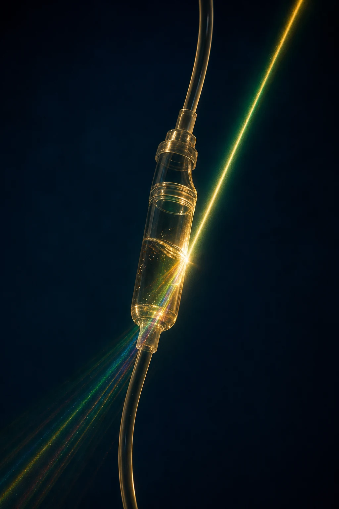

Photomedicine
Intravenous Laser Therapy.
Low-level intravascular light at specific wavelengths, delivered through a fine intravenous line as an adjunct to IV protocols — never as a stand-alone treatment.
The therapy
What this therapy is.
Also known as ILIB (intravascular laser irradiation of blood), this photomedicine adjunct delivers low-level light at defined wavelengths through a fine intravenous fibre. It is used alongside an IV drip — for recovery, neurological support and hangover programmes — not as a treatment on its own.
How the session runs
Step by step.
Every part of the session is decided by the treating physician. Nothing is booked from a menu.
-
01
Assessment & planning
A physician plans the laser session as part of your wider IV course — the two run together, not separately.
-
02
IV access & fibre placement
A fine intravenous line is placed. The laser fibre is introduced through this line under aseptic conditions in a private suite.
-
03
Low-level intravascular light
Light at the chosen wavelength is delivered continuously for about 30 to 60 minutes, alongside your IV drip.
-
04
Session review
Post-session hydration and a brief written summary. Frequency is set as a short series aligned with your IV plan.
Why it’s built this way
The advantages.
-
Adjunct, not stand-alone
Delivered alongside a planned IV protocol — recovery, neuro-support, hangover — so the session serves the wider plan.
-
Physician-planned
Wavelength, session length and frequency are set by the treating physician, not by a fixed package.
-
Comfortable and short
About 30 to 60 minutes in a private suite alongside your drip, with no downtime.
-
Aseptic, single-use
Sterile technique and single-use disposables throughout.
Intravenous laser is an adjunct to IV therapy, not a stand-alone treatment. It is offered at the Taipei centre and at selected partner clinics.
Next step
See if this fits you.
Every advanced therapy is confirmed at consultation. Suitability, timing and any subsequent session are decided by your physician after reviewing your history and, where it changes the plan, your bloodwork.
One to one
Every plan begins with a conversation.
A private consultation with our medical team — your history, your goals, and an honest view of what is appropriate for you.
Request a consultation